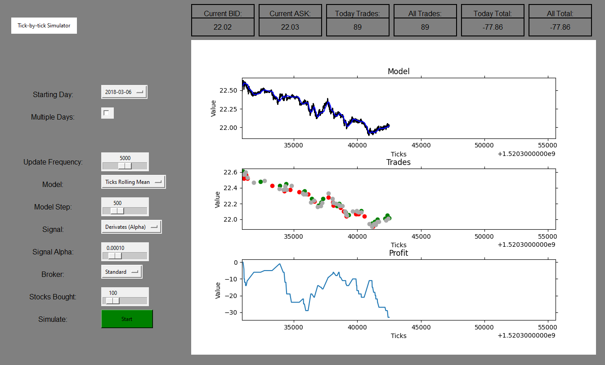

Descrição: Projetos realizados fora da grade curricular da faculdade

Associado na Pandhora Investimentos com foco em modelagem de mercado, alocação de portfolio, monitoramento de risco e desenvolvimento de software

Análise do comportamento de ações e criação de algoritimos de investimento utilizando de dados de alta frequência (tick-by-tick)

Análise de projetos de implementação de Cloud para o governo federal
Criação e condução de workshop com alunos do ensino médio para aproxima-los de conceitos de programação e tecnologia